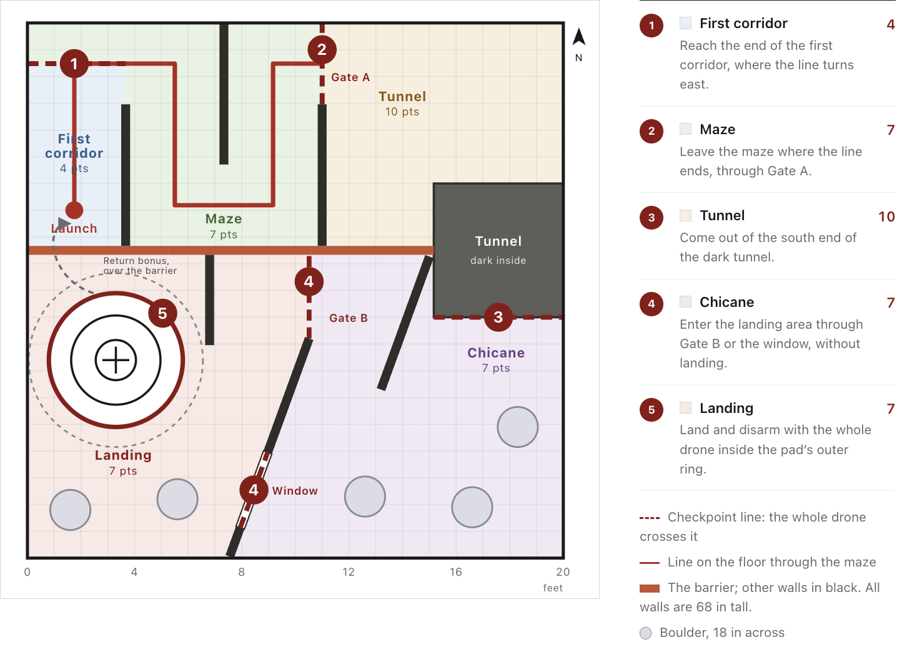
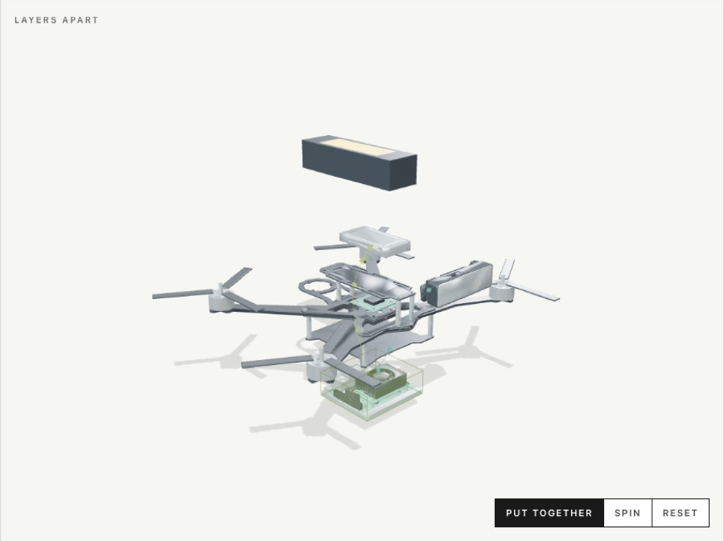
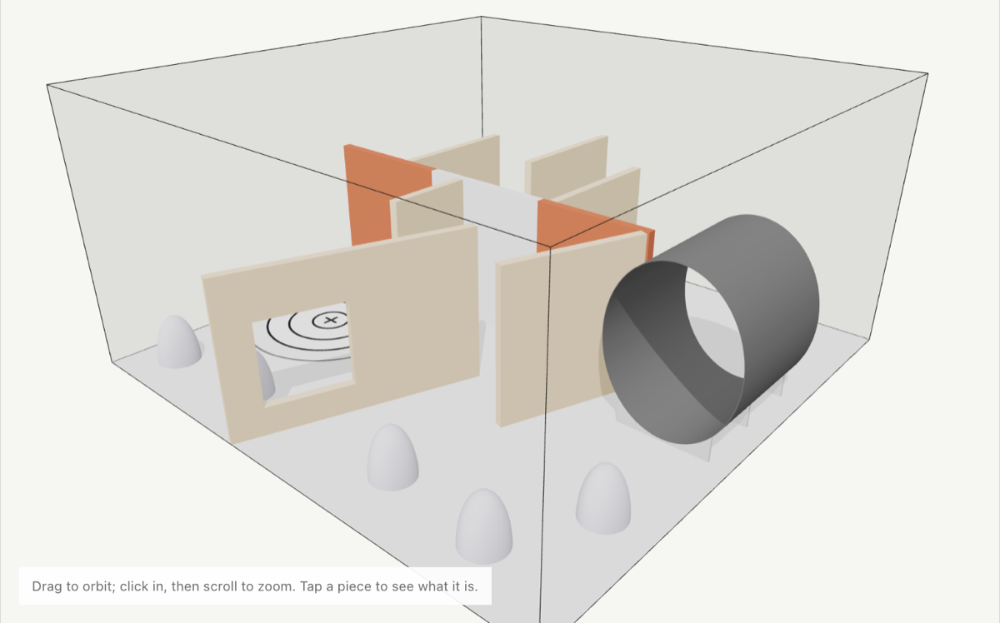

<title>DroneHacks HQ</title>
<meta name="claude:viewport-fit-sides" content="cover">
<link rel="preconnect" href="https://fonts.googleapis.com">
<link rel="stylesheet" href="https://fonts.googleapis.com/css2?family=Archivo:wght@500;600;700;800&family=IBM+Plex+Mono:wght@400;500;600&family=Source+Sans+3:wght@400;600;700&display=swap">
<style>
/* Layout: a tabbed team reference. Countdown and tabs stay pinned; each tab is one readable page. */
:root {
  --bg: #eef1f3; --panel: #ffffff; --ink: #17212b; --muted: #55636f; --line: #d3dae0;
  --accent: #8a1f1f; --accent-soft: #f6e6e4; --bar: #17212b; --bar-ink: #f2f5f7; --bar-muted: #a9b6c1;
  --blue: #1f5f8a; --blue-soft: #e1edf5; --good: #1f6b4a; --good-soft: #e0f0e8; --warn: #8a5a00; --warn-soft: #f8edd5;
  --display: "Archivo", "Helvetica Neue", Arial, sans-serif;
  --body: "Source Sans 3", "Helvetica Neue", Arial, sans-serif;
  --mono: "IBM Plex Mono", ui-monospace, Menlo, monospace;
}
@media (prefers-color-scheme: dark) { :root:not([data-theme="light"]) {
  --bg: #11171d; --panel: #1a222a; --ink: #e8edf1; --muted: #9dabb7; --line: #2f3a44;
  --accent: #f08f85; --accent-soft: #3a2224; --bar: #0a0f14; --bar-ink: #f2f5f7; --bar-muted: #a9b6c1;
  --blue: #8cc4ea; --blue-soft: #1c2f3d; --good: #7fd3ab; --good-soft: #1b3329; --warn: #e8c070; --warn-soft: #3a2f18; color-scheme: dark;
} }
:root[data-theme="dark"] {
  --bg: #11171d; --panel: #1a222a; --ink: #e8edf1; --muted: #9dabb7; --line: #2f3a44;
  --accent: #f08f85; --accent-soft: #3a2224; --bar: #0a0f14; --bar-ink: #f2f5f7; --bar-muted: #a9b6c1;
  --blue: #8cc4ea; --blue-soft: #1c2f3d; --good: #7fd3ab; --good-soft: #1b3329; --warn: #e8c070; --warn-soft: #3a2f18; color-scheme: dark;
}
body { background: var(--bg); color: var(--ink); font: 400 17px/1.55 var(--body); }
body::before { content: ""; position: fixed; inset: 0 0 auto; height: env(safe-area-inset-top, 0px); z-index: 10; background: var(--bar); }
a { color: var(--accent); }
a:focus-visible, button:focus-visible { outline: 2px solid var(--accent); outline-offset: 2px; }
.wrap { max-width: 1120px; margin: 0 auto; padding-left: max(16px, env(safe-area-inset-left, 0px)); padding-right: max(16px, env(safe-area-inset-right, 0px)); }

header.top { position: sticky; top: env(safe-area-inset-top, 0px); z-index: 9; }
.clock { background: var(--bar); color: var(--bar-ink); }
.clock .wrap { display: flex; flex-wrap: wrap; gap: 2px 18px; align-items: baseline; padding-block: 8px; }
.brand { font: 800 16px var(--display); letter-spacing: .02em; }
.next-label { color: var(--bar-muted); font-size: 15px; min-width: 0; }
.next-time { font: 600 19px var(--mono); font-variant-numeric: tabular-nums; margin-left: auto; }
nav.tabs { background: var(--panel); border-bottom: 1px solid var(--line); }
nav.tabs .wrap { display: flex; gap: 4px; overflow-x: auto; padding-block: 0; }
nav.tabs a { flex: none; padding: 9px 10px; font-size: 15px; font-weight: 600; color: var(--muted); text-decoration: none; border-bottom: 3px solid transparent; }
nav.tabs a:hover { color: var(--ink); }
nav.tabs a[aria-current="page"] { color: var(--accent); border-bottom-color: var(--accent); }

h1, h2, h3 { font-family: var(--display); text-wrap: balance; line-height: 1.15; margin: 0; }
h1 { font-size: clamp(29px, 4.2vw, 42px); font-weight: 800; letter-spacing: -.01em; }
h2 { font-size: 25px; font-weight: 700; }
h3 { font-size: 18px; font-weight: 700; }
p { margin: 0; max-width: 70ch; }
.page { padding-block: 26px 56px; display: grid; gap: 30px; }
.block { display: grid; gap: 12px; min-width: 0; }
.lede { color: var(--muted); max-width: 70ch; }
.eyebrow { font: 600 12px var(--mono); letter-spacing: .1em; text-transform: uppercase; color: var(--accent); }

.split { display: grid; grid-template-columns: minmax(0, 5fr) minmax(0, 6fr); gap: 30px; align-items: start; }
.two { display: grid; grid-template-columns: repeat(2, minmax(0, 1fr)); gap: 26px; align-items: start; }
.three { display: grid; grid-template-columns: repeat(3, minmax(0, 1fr)); gap: 14px; align-items: start; }
.figure { background: #fff; border: 1px solid var(--line); border-radius: 4px; overflow: hidden; }
.figure img { display: block; width: 100%; height: auto; }
figure { margin: 0; display: grid; gap: 6px; min-width: 0; }
figcaption { color: var(--muted); font-size: 14px; }
.facts { display: grid; grid-template-columns: repeat(2, minmax(0, 1fr)); gap: 1px; background: var(--line); border: 1px solid var(--line); }
.fact { background: var(--panel); padding: 10px 12px; min-width: 0; }
.fact b { display: block; font: 700 18px var(--display); }
.fact span { color: var(--muted); font-size: 14px; }

.flow { display: grid; grid-template-columns: repeat(5, minmax(0, 1fr)); gap: 12px; }
.step { background: var(--panel); border: 1px solid var(--line); padding: 11px; min-width: 0; position: relative; display: grid; gap: 3px; align-content: start; }
.step b { font: 700 16px var(--display); }
.step .q { color: var(--accent); font-weight: 600; font-size: 15px; }
.step span { color: var(--muted); font-size: 15px; }
.step:not(:last-child)::after { content: "→"; position: absolute; right: -12px; top: 11px; color: var(--muted); font-size: 15px; z-index: 1; }

.loops { display: grid; grid-template-columns: repeat(2, minmax(0, 1fr)); gap: 12px; }
.loop { border: 1px solid var(--line); background: var(--panel); padding: 13px; display: grid; gap: 6px; min-width: 0; }
.loop .rate { font: 600 13px var(--mono); color: var(--blue); }

.table { overflow-x: auto; border: 1px solid var(--line); background: var(--panel); }
table { border-collapse: collapse; width: 100%; font-size: 16px; }
th { text-align: left; font: 600 12px var(--mono); letter-spacing: .06em; text-transform: uppercase; color: var(--muted); padding: 9px 12px; border-bottom: 1px solid var(--line); white-space: nowrap; }
td { padding: 9px 12px; border-bottom: 1px solid var(--line); vertical-align: top; min-width: 120px; }
tr:last-child td { border-bottom: 0; }
td:first-child { font-weight: 700; }
.eff { font: 600 12px var(--mono); padding: 2px 7px; border-radius: 3px; white-space: nowrap; background: var(--blue-soft); color: var(--blue); }

ul.tight, ol.tight { margin: 0; padding-left: 21px; display: grid; gap: 7px; max-width: 70ch; }
dl.terms { display: grid; grid-template-columns: repeat(2, minmax(0, 1fr)); gap: 14px 28px; margin: 0; }
dl.terms div { min-width: 0; }
dt { font-weight: 700; }
dd { margin: 0; color: var(--muted); }

.lesson { display: grid; grid-template-columns: 220px minmax(0, 1fr); gap: 34px; align-items: start; }
.toc { position: sticky; top: 104px; display: grid; gap: 1px; font-size: 15px; }
.toc button { all: unset; cursor: pointer; color: var(--muted); padding: 3px 0; }
.toc button:hover { color: var(--accent); }
.toc button:focus-visible { outline: 2px solid var(--accent); }
.chapter { display: grid; gap: 10px; padding-block: 20px; border-top: 1px solid var(--line); scroll-margin-top: 104px; }
.chapter:first-child { border-top: 0; padding-top: 0; }
.chapter .num { font: 600 13px var(--mono); color: var(--accent); }
.takeaway { border-left: 3px solid var(--blue); padding: 7px 12px; background: var(--blue-soft); max-width: 70ch; }
.diagram { border: 1px solid var(--line); background: var(--panel); padding: 10px; overflow-x: auto; max-width: 720px; }
.diagram svg { display: block; width: 100%; min-width: 460px; height: auto; }
.d-map { fill: none; stroke: var(--ink); stroke-width: 3; }
.d-est { fill: none; stroke: var(--accent); stroke-width: 3; stroke-dasharray: 8 6; }
.d-fix { fill: none; stroke: var(--blue); stroke-width: 2.5; }
.d-dot { fill: var(--blue); }
.d-txt { fill: var(--ink); font: 500 14px var(--body); }
.d-txt2 { fill: var(--accent); font: 600 14px var(--body); }
.d-txt3 { fill: var(--blue); font: 600 14px var(--body); }

details.draft { border: 1px solid var(--line); background: var(--panel); padding: 12px 14px; min-width: 0; }
details.draft summary { cursor: pointer; font-size: 18px; font-weight: 700; }
details.draft[open] summary { margin-bottom: 14px; }
details.draft .inner { display: grid; gap: 14px; min-width: 0; }
.card { border: 1px solid var(--line); background: var(--panel); padding: 13px; display: grid; gap: 7px; min-width: 0; }
.card ul { margin: 0; padding-left: 18px; color: var(--muted); display: grid; gap: 4px; font-size: 16px; }

.sched { display: grid; grid-template-columns: repeat(3, minmax(0, 1fr)); gap: 22px; }
.day { display: grid; gap: 2px; align-content: start; min-width: 0; }
.day h3 { margin-bottom: 6px; }
.dl { display: grid; grid-template-columns: 74px minmax(0, 1fr); gap: 2px 10px; padding: 6px 4px; border-top: 1px solid var(--line); }
.dl time { font: 500 14px var(--mono); color: var(--muted); padding-top: 2px; }
.dl .left { grid-column: 2; font: 500 13px var(--mono); color: var(--muted); font-variant-numeric: tabular-nums; }
.dl.key .what { font-weight: 700; }
.dl.next { background: var(--accent-soft); }
.dl.next .left { color: var(--accent); font-weight: 600; }
.dl.past .what, .dl.past time { color: var(--muted); text-decoration: line-through; }

@media (max-width: 860px) {
  .split, .two, .three, .sched, .loops, .lesson { grid-template-columns: minmax(0, 1fr); }
  .flow { grid-template-columns: minmax(0, 1fr); }
  .step:not(:last-child)::after { content: "↓"; right: 12px; top: auto; bottom: -14px; }
  dl.terms { grid-template-columns: minmax(0, 1fr); }
  .next-time { margin-left: 0; }
  .toc { position: static; grid-template-columns: repeat(2, minmax(0, 1fr)); gap: 2px 12px; }
}
</style>

<header class="top">
  <div class="clock"><div class="wrap">
    <span class="brand">DroneHacks HQ</span>
    <span class="next-label" id="nextLabel">Next deadline: see the Deadlines tab</span>
    <span class="next-time" id="nextTime"></span>
  </div></div>
  <nav class="tabs" aria-label="Pages"><div class="wrap" id="tabs">
    <a href="#challenge">Challenge</a>
    <a href="#lesson">Lesson</a>
    <a href="#system">How it fits</a>
    <a href="#code">Starter code</a>
    <a href="#approaches">Approaches</a>
    <a href="#proposal">Your proposal</a>
    <a href="#drafts">Team drafts</a>
    <a href="#drone">Drone</a>
    <a href="#deadlines">Deadlines</a>
    <a href="#rules">Rules</a>
    <a href="#glossary">Glossary</a>
  </div></nav>
</header>

<main class="wrap">

<!-- CHALLENGE -->
<div class="page" id="p-challenge">
  <div class="split">
    <div class="block">
      <div class="eyebrow">Stanford DroneHacks · Nov 6–8, 2026</div>
      <h1>Fly a 20 × 20 ft indoor course alone. No GPS, no pilot.</h1>
      <p>Every team gets the same drone, so the competition is in the software. After one start command, the drone has to get through a maze, a dark tunnel and a chicane, then land on a pad, with nobody touching the controls.</p>
      <div class="facts">
        <div class="fact"><b>60 run + 40 judged</b><span>25 technical pitch, 15 generality</span></div>
        <div class="fact"><b>4 · 7 · 10 · 7 · 7</b><span>Checkpoint points, cleared in order</span></div>
        <div class="fact"><b>+5 window</b><span>Instead of Gate B, on a finished run</span></div>
        <div class="fact"><b>×1.25 return</b><span>Fly back over the barrier after landing</span></div>
        <div class="fact"><b>3 minutes</b><span>Limit per run. Your best run counts.</span></div>
        <div class="fact"><b>Under 68 in</b><span>Going over a wall keeps only 15% of that checkpoint</span></div>
      </div>
    </div>
    <figure>
      <div class="figure"></div>
      <figcaption>Preliminary course. It may change slightly before judging.</figcaption>
    </figure>
  </div>
  <div class="two">
    <div class="block">
      <h2>How scoring works</h2>
      <ul class="tight">
        <li><b>Unfinished run:</b> the checkpoints reached, plus up to 7 for speed.</li>
        <li><b>Finished run:</b> 35 + 20 × (fastest time ÷ your time), plus 5 for the window.</li>
        <li><b>Return:</b> a finished run that also flies back multiplies its run points by 1.25. A failed return loses only the bonus.</li>
        <li><b>Touches:</b> each adds 5 seconds. A crash ends the run.</li>
        <li><b>Clearing another checkpoint</b> always beats doing fewer faster.</li>
      </ul>
    </div>
    <div class="block">
      <h2>The 40 judged points</h2>
      <ul class="tight">
        <li><b>Technical pitch (25):</b> 5–7 minutes plus questions, on autonomy design, execution, originality, and evidence of testing.</li>
        <li><b>Generality (15):</b> how well the software would work on a different course. An AI code review flags fixed waypoints, routes and timings for the judges.</li>
        <li><b>Prizes:</b> $7,000, $3,000 and $2,000 for the top three, $2,000 for most technologically impressive, $1,000 for fastest run.</li>
      </ul>
    </div>
  </div>
</div>

<!-- LESSON -->
<div class="page" id="p-lesson" hidden>
  <div class="block">
    <h1>Autonomous drones from zero</h1>
    <p class="lede">No background needed. Read it top to bottom. Each chapter builds on the one before it.</p>
  </div>
  <div class="lesson">
    <div class="toc" id="toc">
      <button data-go="c1">1. The big picture</button>
      <button data-go="c2">2. Staying in the air</button>
      <button data-go="c3">3. Two computers</button>
      <button data-go="c4">4. The sensors</button>
      <button data-go="c5">5. Localization</button>
      <button data-go="c6">6. Drift</button>
      <button data-go="c7">7. Seeing motion</button>
      <button data-go="c8">8. Blending sensors</button>
      <button data-go="c9">9. Maps and coordinates</button>
      <button data-go="c10">10. Fixing drift</button>
      <button data-go="c11">11. Perception</button>
      <button data-go="c12">12. Planning a path</button>
      <button data-go="c13">13. Following the path</button>
      <button data-go="c14">14. Mission logic</button>
      <button data-go="c15">15. The software plumbing</button>
      <button data-go="c16">16. Simulation vs reality</button>
    </div>
    <div>
      <div class="chapter" id="c1"><span class="num">Chapter 1</span><h2>The big picture</h2>
        <p>Imagine walking through an unfamiliar building with no phone. To reach the far room, you constantly do four things without noticing: you look around, you keep track of where you are, you decide which way to go, and your legs carry you there.</p>
        <p>An autonomous drone has to do those same four things in software. Robotics has a name for each:</p>
        <ul class="tight">
          <li><b>Perception:</b> what's around me?</li>
          <li><b>Localization:</b> where am I?</li>
          <li><b>Planning:</b> where should I go?</li>
          <li><b>Control:</b> how do I physically get there?</li>
        </ul>
        <div class="takeaway">Almost everything in this project is one of those four jobs, or the wiring between them.</div>
      </div>

      <div class="chapter" id="c2"><span class="num">Chapter 2</span><h2>How a drone stays in the air</h2>
        <p>A quadcopter has four motors. Spinning them all faster makes it rise. Spinning one side faster tilts it, and tilting pushes it sideways, the way leaning forward starts you walking. So to move forward, a drone tips its nose down slightly.</p>
        <p>A drone is unstable. Left alone, it tips over within a moment. So a small computer adjusts motor speeds hundreds of times a second to keep it level. This fast correcting is called a <b>control loop</b>: measure, compare to the target, correct, repeat.</p>
        <div class="takeaway">Keeping the drone stable is already solved for you. You tell it where to go, and it handles the balancing.</div>
      </div>

      <div class="chapter" id="c3"><span class="num">Chapter 3</span><h2>Two computers, two jobs</h2>
        <p>The drone has two computers, a bit like a person's brain and spinal reflexes.</p>
        <ul class="tight">
          <li><b>Pixhawk (reflexes):</b> a small flight controller running software called <b>PX4</b>. It's fast and reliable, and it keeps the drone stable and drives the motors.</li>
          <li><b>Jetson (brain):</b> a small but capable computer with a graphics chip. It reads the camera, thinks, and decides what to do next. Your code runs here.</li>
        </ul>
        <p>The Jetson sends the Pixhawk targets like "go to this point" or "move at this speed". The Pixhawk sends back its status and where it believes it is.</p>
        <div class="takeaway">You write the brain. PX4 is the reflexes. The Jetson never spins a motor directly.</div>
      </div>

      <div class="chapter" id="c4"><span class="num">Chapter 4</span><h2>The sensors</h2>
        <p>Sensors are how the drone learns about the world. Each one is good at something and bad at something, which is why drones carry several.</p>
        <div class="table"><table>
          <thead><tr><th>Sensor</th><th>What it measures</th><th>When it struggles</th></tr></thead>
          <tbody>
            <tr><td>IMU</td><td>Rotation and acceleration, very fast. It's what lets a phone know which way is up.</td><td>Position worked out from it alone goes wrong within seconds.</td></tr>
            <tr><td>Stereo cameras</td><td>Two cameras side by side, like two eyes. Comparing the images gives distance.</td><td>Darkness, and blank surfaces with nothing to match.</td></tr>
            <tr><td>Depth image</td><td>A picture where every pixel holds a distance instead of a colour. The OAK-D computes it from the stereo pair.</td><td>Same as stereo, and closer than about 0.35 m.</td></tr>
            <tr><td>Rangefinder</td><td>The VL53L1X fires invisible light down and times the return to get height.</td><td>Only sees one spot below. Objects under it look like the floor rising.</td></tr>
            <tr><td>Barometer</td><td>Air pressure, which gives a rough height.</td><td>Noisy, and indoor air currents disturb it.</td></tr>
          </tbody>
        </table></div>
        <div class="takeaway">No single sensor is enough, so much of the work is combining them.</div>
      </div>

      <div class="chapter" id="c5"><span class="num">Chapter 5</span><h2>Localization: "where am I?"</h2>
        <p><b>Localization</b> means the drone working out its own position and direction. A typical answer looks like: "I'm 1.2 m north and 0.5 m east of the launch mark, 0.8 m off the floor, facing east."</p>
        <p>Your phone does this with GPS, which listens to satellites. That doesn't work well indoors and it's banned here, so the drone has to work out its position from its own sensors.</p>
        <p>Why it matters so much: "fly through Gate A" is meaningless unless the drone knows where it is compared to Gate A. With gaps around 3 ft wide, being wrong by a foot can mean hitting a wall. This is why your team's notes call it the hard part.</p>
        <p>The full answer, position plus direction, is called a <b>pose</b>.</p>
        <div class="takeaway">Localization turns "the sensors saw stuff" into "I am here". Planning and path following are only as good as this answer.</div>
      </div>

      <div class="chapter" id="c6"><span class="num">Chapter 6</span><h2>Drift: why it's hard</h2>
        <p>Close your eyes and walk across a room counting steps. You'd land near your goal, but not exactly, and the further you go, the more wrong you'd be. Tracking your position by adding up your own movements is called <b>dead reckoning</b>, and the growing error is called <b>drift</b>.</p>
        <p>Say tracking is off by 1% of the distance flown. Over a roughly 18 m route, that's about 18 cm by the end, and heading errors make it worse because a slightly wrong direction keeps pushing you off course.</p>
        <div class="diagram" role="img" aria-label="A maze-shaped true path with an estimated path slowly separating from it, then snapping back when checked against a known wall.">
          <svg viewBox="0 0 640 262">
            <path class="d-map" d="M40 235 L40 70 L200 70 L200 205 L360 205 L360 70 L610 70"/>
            <path class="d-est" d="M40 235 L49 66 L214 54 L224 190 L376 180"/>
            <path class="d-fix" d="M376 180 L361 203"/>
            <path class="d-est" d="M361 203 L367 66 L606 52"/>
            <circle class="d-dot" cx="361" cy="203" r="6"/>
            <text class="d-txt" x="58" y="228">True path</text>
            <text class="d-txt2" x="72" y="40">Where the drone thinks it is</text>
            <text class="d-txt3" x="382" y="222">Correction: it recognizes a wall</text>
          </svg>
        </div>
        <div class="takeaway">Tracking your own motion is fast and smooth but gets worse over time. To stop that, you need something fixed to compare against.</div>
      </div>

      <div class="chapter" id="c7"><span class="num">Chapter 7</span><h2>Seeing motion: VIO</h2>
        <p>Look out a car window and you can sense your speed from how things move past you. A computer can do this too. It finds distinctive spots in an image, called <b>features</b>, such as corners or specks of wood grain, and tracks how they shift from one frame to the next. That shift reveals how the camera moved.</p>
        <p>Add the IMU, which fills the gaps between frames, and you get <b>visual-inertial odometry (VIO)</b>. The starter project's tracker is <b>cuVSLAM</b>, NVIDIA's version, which runs on the graphics chip.</p>
        <p>Now the course makes sense. A blank wall has few features to track, and the dark tunnel may have none visible at all. Your notes flagged exactly this. VIO is still dead reckoning, so it drifts too.</p>
        <p>You'll also hear <b>SLAM</b>: building a map while localizing inside it. Here the course layout is published, so how much of that you need is a real design question.</p>
        <div class="takeaway">VIO estimates motion from moving image features plus the IMU. It needs light and texture, and it drifts.</div>
      </div>

      <div class="chapter" id="c8"><span class="num">Chapter 8</span><h2>Blending sensors: the estimator</h2>
        <p>Sensors disagree. The camera says you moved 10 cm, the IMU says 12 cm, and the rangefinder reports a height jump. An <b>estimator</b> weighs each source by how much it trusts it and produces one best guess. This is called <b>sensor fusion</b>.</p>
        <p>PX4's estimator is called <b>EKF2</b>. The EKF, or extended Kalman filter, predicts where you should be, then nudges that prediction using each new measurement.</p>
        <p>In the starter, position from cuVSLAM passes through a checking program called <b>ev_bridge</b> and into EKF2. The Jetson then reads back PX4's fused position.</p>
        <div class="takeaway">The estimator merges many imperfect sensors into one position. If vision goes bad, that position goes bad, and PX4 needs it to hold a location.</div>
      </div>

      <div class="chapter" id="c9"><span class="num">Chapter 9</span><h2>Maps and coordinates</h2>
        <p>A <b>coordinate frame</b> is a choice of where zero is and which way the axes point. "Two blocks north of the station" and "five blocks east of my house" could be the same spot, described from different starting points.</p>
        <p>Your project has at least two important frames:</p>
        <ul class="tight">
          <li><b>The drone's frame:</b> zero is wherever its tracking started.</li>
          <li><b>The map frame:</b> zero is a corner of the course, and walls and gates are measured from it.</li>
        </ul>
        <p>To use the map, you need the link between them: "my tracking's zero sits at this spot on the map, facing this way." Placing the drone on a known launch mark gives that link. Edward's notes call this the map-to-navigation transform.</p>
        <p>One trap: PX4 uses north, east, down, so going up means z gets more negative. Camera software often uses different axes. Mixing frames is one of the most common robotics bugs.</p>
        <div class="takeaway">A position only means something within a frame. Lining up the drone's frame with the map's frame is what makes the map useful.</div>
      </div>

      <div class="chapter" id="c10"><span class="num">Chapter 10</span><h2>Fixing drift with the map</h2>
        <p>Back to walking with your eyes closed. If you open them for a moment and see the corner of a known wall, you instantly know where you really are. The same goes for the drone. It has a floor plan, so it can compare what its depth sensor sees with where walls should be.</p>
        <p>There are a few ways to do that comparison:</p>
        <ul class="tight">
          <li><b>Alignment (ICP):</b> slide the measured depth points around until they fit the known walls. How far you had to slide them is your error.</li>
          <li><b>Particle filter:</b> keep hundreds of guesses of your position, and drop the ones whose expected view doesn't match the real one.</li>
          <li><b>Landmarks:</b> recognize a specific thing, like a gate or the floor line, and reset your position from it.</li>
        </ul>
        <p>A sudden correction can make the drone jerk, so corrections are usually blended in gradually. Blar's notes call this smooth correction blending.</p>
        <div class="takeaway">VIO gives smooth short-term motion. A known map can give long-term truth. Combining the two is a common pattern, and several versions exist.</div>
      </div>

      <div class="chapter" id="c11"><span class="num">Chapter 11</span><h2>Perception: from pixels to meaning</h2>
        <p>A depth image is only a grid of distances. Perception turns that into useful facts: "wall 0.6 m ahead", "gap on the left", "the floor line curves east", "there's the pad".</p>
        <p>It can be simple geometry, like checking how close points are in a corridor ahead of the drone. It can use classic image processing, like finding a red line by colour. Or it can use a trained neural network that recognizes objects. The starter provides raw depth and a basic forward clearance check. It doesn't recognize gates, the line or the pad.</p>
        <div class="takeaway">Sensors give numbers. Perception turns them into facts the rest of the software can act on.</div>
      </div>

      <div class="chapter" id="c12"><span class="num">Chapter 12</span><h2>Planning a path</h2>
        <p>Planning means finding a safe route from where you are to where you want to be.</p>
        <p>A common way starts by cutting the map into a grid of small squares, each marked free or blocked. This is called an <b>occupancy grid</b>. Next you <b>inflate</b> the obstacles, growing each one on the map by the drone's half-width plus a safety margin. After that, you can treat the drone as a single point, which makes the maths much easier.</p>
        <p>Then a search algorithm finds the shortest route through free squares. The classic one is <b>A*</b> (say "A star"), which spreads out from the start, favouring squares that head toward the goal.</p>
        <p>Inflation has a real trade-off on this course. With gaps around 3 ft wide, too much padding makes a gap look closed.</p>
        <div class="takeaway">A planner needs a map, a start, a goal and a size for the drone. Its output is a list of points to fly through.</div>
      </div>

      <div class="chapter" id="c13"><span class="num">Chapter 13</span><h2>Following the path</h2>
        <p>A path is a line on a map. The drone still has to fly along it, and it has momentum, so it can't turn on a dime.</p>
        <p>A common way is the <b>carrot on a stick</b>: keep choosing a target point a little way ahead on the path, and keep flying toward it. Edward's notes call this a lookahead point. Near corners, you shorten the lookahead and slow down. A <b>velocity profile</b> is the plan for how fast to go at each part of the path.</p>
        <p>The Jetson streams these targets to PX4 in <b>Offboard mode</b>. They have to keep arriving. If the stream stops, PX4 assumes something broke and leaves Offboard mode.</p>
        <p>A <b>safety filter</b> can sit between the follower and PX4 and change a command that would hit something. A <b>control barrier function (CBF)</b>, mentioned in your notes, is a mathematical way of building one.</p>
        <div class="takeaway">The follower turns a path into a steady stream of targets at a safe speed. PX4 does the actual flying.</div>
      </div>

      <div class="chapter" id="c14"><span class="num">Chapter 14</span><h2>Mission logic: the state machine</h2>
        <p>The drone needs to behave differently at different moments: take off, fly the maze, cross the tunnel, land. A <b>state machine</b> organizes that. The drone is in exactly one state at a time, and clear conditions move it to the next, such as "crossed Gate A, so switch to tunnel approach".</p>
        <p>This is also where you decide what happens when something fails. If position goes bad, do you hold, slow down or land? Landing away from the pad ends the run, so these choices directly affect your score.</p>
        <div class="takeaway">The state machine is the drone's script for the run, including what to do when things go wrong.</div>
      </div>

      <div class="chapter" id="c15"><span class="num">Chapter 15</span><h2>The software plumbing</h2>
        <p>All of this runs as separate programs that have to talk to each other. <b>ROS 2</b> is the messaging system that connects them.</p>
        <ul class="tight">
          <li><b>Node:</b> one running program, such as the camera driver or your planner.</li>
          <li><b>Topic:</b> a named channel, such as <code>/camera/depth/image_raw</code>.</li>
          <li><b>Publish and subscribe:</b> one node posts to a topic, and any node can listen. It's like a group chat per subject.</li>
        </ul>
        <p>PX4 is connected into ROS 2 by a bridge, so its data also appears as topics starting with <code>/fmu/</code>. Your code is mostly Python. The starter's <code>refnav/core.py</code> holds the decisions, and <code>refnav/node.py</code> connects them to ROS.</p>
        <div class="takeaway">If two pieces need to work together, the question is which topic connects them and what's in the message.</div>
      </div>

      <div class="chapter" id="c16"><span class="num">Chapter 16</span><h2>Simulation vs reality</h2>
        <p>A <b>simulator</b> is a virtual world with virtual physics and sensors. It runs real PX4 software, so you can test code without crashing anything. Your lab is in the cloud, and the same code can later run on the real drone.</p>
        <p>The gap between the two is called <b>sim-to-real</b>, and it's where projects usually get hurt. Real cameras blur, real walls can be plainer, lighting changes and vibration is real. The cloud computer is also much more powerful than an 8 GB Jetson, and it uses a different processor type.</p>
        <p>A useful habit: test the riskiest assumption on real hardware as early as possible, because a simulator pass proves less than it feels like it does.</p>
        <div class="takeaway">Simulation is for fast testing of logic. Only real flights prove the system works.</div>
      </div>
    </div>
  </div>
</div>

<!-- SYSTEM -->
<div class="page" id="p-system" hidden>
  <div class="block">
    <h1>How the pieces work together</h1>
    <p class="lede">This shows the jobs any solution has to cover, whichever approach you pick. The Approaches tab shows the different ways to do each job.</p>
  </div>
  <div class="block">
    <h2>The jobs, in order</h2>
    <div class="flow">
      <div class="step"><b>Sense</b><span class="q">Raw data</span><span>Cameras, IMU and rangefinder produce measurements</span></div>
      <div class="step"><b>Perceive</b><span class="q">What's around me?</span><span>Turn measurements into walls, gaps and landmarks</span></div>
      <div class="step"><b>Localize</b><span class="q">Where am I?</span><span>Estimate position, ideally in map coordinates</span></div>
      <div class="step"><b>Decide</b><span class="q">Where to next?</span><span>Mission stage, planning and path following</span></div>
      <div class="step"><b>Fly</b><span class="q">How?</span><span>PX4 turns targets into motor commands</span></div>
    </div>
  </div>
  <div class="block">
    <h2>Two loops, running at different speeds</h2>
    <div class="loops">
      <div class="loop"><h3>The thinking loop, on the Jetson</h3><span class="rate">Starter ticks 20 times a second</span><p>Reads position and depth, checks the mission stage, picks the next target, and sends it to PX4. This is the code you write.</p></div>
      <div class="loop"><h3>The stability loop, on the Pixhawk</h3><span class="rate">Hundreds of times a second</span><p>Compares the drone's state with the target and adjusts the motors. You configure and use this, but you don't write it.</p></div>
    </div>
  </div>
  <div class="block">
    <h2>Who feeds whom</h2>
    <div class="table"><table>
      <thead><tr><th>Piece</th><th>Runs on</th><th>Takes in</th><th>Gives out</th></tr></thead>
      <tbody>
        <tr><td>Camera driver</td><td>OAK-D, Jetson</td><td>Light</td><td>Stereo images, depth, camera IMU</td></tr>
        <tr><td>Position tracker</td><td>Jetson</td><td>Stereo images, IMU</td><td>Motion estimate from where tracking started</td></tr>
        <tr><td>ev_bridge</td><td>Jetson</td><td>Motion estimate</td><td>Checked estimate, sent to PX4</td></tr>
        <tr><td>PX4 estimator</td><td>Pixhawk</td><td>Vision, IMU, barometer, rangefinder</td><td>Best position and velocity</td></tr>
        <tr><td>Map correction</td><td>Jetson</td><td>Depth, position, course map</td><td>Drift correction</td></tr>
        <tr><td>Course map</td><td>File on the Jetson</td><td>Published layout</td><td>Walls, gates and obstacles as data</td></tr>
        <tr><td>Planner</td><td>Jetson</td><td>Map, start, goal</td><td>Path</td></tr>
        <tr><td>Follower</td><td>Jetson</td><td>Path, current position</td><td>Next target and speed</td></tr>
        <tr><td>Safety check</td><td>Jetson</td><td>Target, live depth</td><td>Target, changed if unsafe</td></tr>
        <tr><td>Mission logic</td><td>Jetson</td><td>Everything's status</td><td>Current stage, what to do on failure</td></tr>
        <tr><td>PX4 control</td><td>Pixhawk</td><td>Targets</td><td>Motor commands</td></tr>
        <tr><td>Logger</td><td>Jetson</td><td>All of the above</td><td>A record of each flight</td></tr>
      </tbody>
    </table></div>
  </div>
  <div class="block">
    <h2>One moment in the maze</h2>
    <ol class="tight">
      <li>The cameras capture a frame of the wall ahead.</li>
      <li>The tracker sees features shift and estimates the drone moved 3 cm forward.</li>
      <li>That goes through ev_bridge to PX4, which fuses it with the IMU.</li>
      <li>The Jetson reads the updated position. If map correction exists, it compares depth with the known walls.</li>
      <li>Mission logic confirms the current stage is still "maze".</li>
      <li>The follower picks a target a little further along the path.</li>
      <li>The safety check, if there is one, confirms depth shows that direction is clear.</li>
      <li>The target goes to PX4 in Offboard mode.</li>
      <li>PX4 tilts the drone slightly toward it. Then it all repeats.</li>
    </ol>
  </div>
  <div class="block">
    <h2>What each stage of the course tests</h2>
    <div class="table"><table>
      <thead><tr><th>Stage</th><th>Main challenge</th><th>Pieces under most stress</th></tr></thead>
      <tbody>
        <tr><td>Takeoff</td><td>Starting pose and map link have to be right</td><td>Frames, mission logic</td></tr>
        <tr><td>Maze</td><td>Narrow lanes and tight turns. Walls may look plain.</td><td>Localization, follower, inflation</td></tr>
        <tr><td>Open area</td><td>Lining up with the tunnel entrance</td><td>Localization, drift correction</td></tr>
        <tr><td>Tunnel</td><td>Dark inside, so vision may fail. A round shape limits height.</td><td>Mission logic, estimator, sensors</td></tr>
        <tr><td>Chicane</td><td>Angled walls and boulders, then Gate B or the window</td><td>Planner, height control for the window</td></tr>
        <tr><td>Landing</td><td>Whole drone inside the outer ring, then disarm</td><td>Localization, landing logic</td></tr>
        <tr><td>Return</td><td>Take off again, cross above the walls, land within 2 ft of launch</td><td>Mission logic, height, re-arming</td></tr>
      </tbody>
    </table></div>
  </div>
  <div class="block">
    <h2>What breaks when a piece fails</h2>
    <div class="table"><table>
      <thead><tr><th>If this fails</th><th>This happens next</th></tr></thead>
      <tbody>
        <tr><td>Camera can't see</td><td>Tracker and depth weaken, then PX4's position gets worse, and the target becomes unreliable.</td></tr>
        <tr><td>Map and drone frames disagree</td><td>The path is correct on paper but in the wrong place in the real world.</td></tr>
        <tr><td>Target stream stops</td><td>PX4 leaves Offboard mode, and the run is likely over.</td></tr>
        <tr><td>Course differs from the map</td><td>The planner can't know, so something else has to notice.</td></tr>
        <tr><td>Jetson falls behind</td><td>Data arrives late and everything downstream acts on old information.</td></tr>
      </tbody>
    </table></div>
  </div>
  <div class="block">
    <h2>What the starter does today</h2>
    <p class="lede">From reading the code, not from a test flight. These are facts about the baseline, whatever approach you choose.</p>
    <ul class="tight">
      <li><b>It has:</b> takeoff, straight legs, turns, landing, safety checks, a forward clearance check, and cuVSLAM with ev_bridge in the simulator.</li>
      <li><b>It doesn't have:</b> a course map, a planner, gate or line detection, map correction, a tunnel behaviour, or the return.</li>
      <li><b>stop_m = 0.9 m:</b> it stops short of the turn at checkpoint 1, about 0.45 m from the wall.</li>
      <li><b>corridor_half_m = 0.6 m:</b> it checks a 1.2 m strip, wider than the lanes of about 1.1 m.</li>
      <li><b>Any blockage lands the drone,</b> and losing depth makes it hold and then land.</li>
      <li><b>On hardware:</b> the repo says its cuVSLAM binary can't run on an Orin, and the Jetson runs ROS 2 Humble while the lab runs Jazzy.</li>
    </ul>
  </div>
</div>

<!-- STARTER CODE -->
<div class="page" id="p-code" hidden>
  <div class="block">
    <h1>The starter code</h1>
    <p class="lede">What you're given, what's left to build, and which files you'll touch.</p>
  </div>
  <div class="block">
    <h2>How the drone works, in short</h2>
    <dl class="terms">
      <div><dt>Camera (OAK-D S2)</dt><dd>Sees the scene and measures distance.</dd></div>
      <div><dt>Jetson</dt><dd>The onboard computer where your code runs. It decides where to go next.</dd></div>
      <div><dt>Pixhawk running PX4</dt><dd>Keeps the drone stable and drives the motors. You don't write this part.</dd></div>
      <div><dt>ROS 2</dt><dd>How programs on the drone exchange messages, called topics.</dd></div>
      <div><dt>Setpoint</dt><dd>A message from your code saying "go here". Offboard mode is when PX4 follows them.</dd></div>
      <div><dt>VIO (cuVSLAM)</dt><dd>Works out the drone's position from camera images and motion sensors, replacing GPS.</dd></div>
    </dl>
  </div>
  <div class="two">
    <div class="block">
      <h2>What's given</h2>
      <ul class="tight">
        <li>Takeoff, hover and landing</li>
        <li>The position estimate from the camera, fed into PX4</li>
        <li>A forward depth check that stops the drone before obstacles</li>
        <li>Safety behaviour for when sensors fail</li>
        <li>A simple follower for straight-line routes</li>
        <li>A simulator and a learning notebook in <code>learn/</code>. In your repo copy, only the notebook is included. The simulator runs in the cloud lab.</li>
      </ul>
    </div>
    <div class="block">
      <h2>What you need to build</h2>
      <ul class="tight">
        <li>A course map, plus code that plans a path through it</li>
        <li>A way to correct position drift, using the floor line and walls</li>
        <li>A plan for flying the tunnel when the cameras can't see well</li>
        <li>Accurate pad landing, and the window and return if time allows</li>
        <li>A presentation, a README and evidence of your testing</li>
      </ul>
    </div>
  </div>
  <div class="block">
    <h2>Files you'll edit most</h2>
    <div class="table"><table>
      <thead><tr><th>File</th><th>What it does</th><th>What you'll change</th></tr></thead>
      <tbody>
        <tr><td><code>refnav/core.py</code></td><td>The drone's decisions: climb, turn, move, land</td><td>Your main file. Add the course stages and change "blocked, so land".</td></tr>
        <tr><td><code>refnav/depth.py</code></td><td>Turns depth images into distances</td><td>Measure walls on each side and find openings.</td></tr>
        <tr><td><code>refnav/node.py</code></td><td>Connects core.py to ROS and PX4</td><td>Add new sensors and topics.</td></tr>
        <tr><td><code>tests/test_refnav_core.py</code></td><td>Tests decisions without flying</td><td>Add a test for each new behaviour.</td></tr>
      </tbody>
    </table></div>
    <p class="lede">In core.py, remember that PX4 uses north-east-down coordinates, so going up means z gets smaller. This is an easy mistake for beginners.</p>
  </div>
  <div class="block">
    <h2>Files you'll change a little</h2>
    <div class="table"><table>
      <thead><tr><th>File</th><th>What you'd change</th></tr></thead>
      <tbody>
        <tr><td><code>main.py</code></td><td>Starts the program, and sets height and hover time.</td></tr>
        <tr><td><code>flight.yaml</code></td><td>Topic names, which may differ on the real drone.</td></tr>
        <tr><td><code>route.json</code></td><td>Avoid fixed coordinates here, since hard-coded routes lose generality points.</td></tr>
        <tr><td><code>onboard/config/vio.yaml</code></td><td>How the position estimate behaves in the dark.</td></tr>
        <tr><td><code>README.md</code></td><td>How your stack works and how to run it. Required by rule 9.4.</td></tr>
      </tbody>
    </table></div>
  </div>
  <div class="three">
    <div class="card"><h3>Files you'll probably add</h3><p>Suggested names only.</p><ul><li><code>course_map.yaml</code>: the published layout as data</li><li><code>refnav/planner.py</code>: finds a path through the map</li><li><code>refnav/line_detect.py</code>: finds the floor line</li><li><code>refnav/tunnel.py</code>: the flying behaviour inside the tunnel</li></ul></div>
    <div class="card"><h3>Read, but mostly leave alone</h3><ul><li><code>onboard/slam/</code> and <code>onboard/vio/</code>: the position estimate and its link to PX4</li><li><code>onboard/examples/takeoff_land.py</code>: the shortest example of how to fly</li></ul></div>
    <div class="card"><h3>Keep out of flight code</h3><ul><li><code>refnav/gps.py</code>: GPS is banned on scored runs</li><li><code>SIM_SENSOR_EXAMPLE.py</code> and <code>dronehacks_sim</code>: these read simulator truth, so use them only for testing</li></ul></div>
  </div>
</div>

<!-- APPROACHES -->
<div class="page" id="p-approaches" hidden>
  <div class="block">
    <h1>Different approaches</h1>
    <p class="lede">None of these is a recommendation. Effort is a rough guess for a weekend. Each decision affects the others, so read Decision 1 first.</p>
  </div>

  <div class="block">
    <h2>Decision 1: the overall philosophy</h2>
    <div class="table"><table>
      <thead><tr><th>Approach</th><th>How it works</th><th>Strengths</th><th>Weaknesses</th><th>Effort</th></tr></thead>
      <tbody>
        <tr><td>Map-first</td><td>Load the published layout, plan a route, track position, follow it.</td><td>Direct and fast when localization is good. Allowed by the rules.</td><td>Everything depends on localization. Course changes need detecting.</td><td><span class="eff">Medium–high</span></td></tr>
        <tr><td>Reactive</td><td>No global map. Respond to what's visible with rules like follow the wall or the floor line.</td><td>Doesn't need accurate global position. Naturally general.</td><td>Hard to know which way to go or which stage you're in. Different rules per stage.</td><td><span class="eff">Medium</span></td></tr>
        <tr><td>Hybrid</td><td>Map gives the rough route. Live sensing handles local position and obstacles.</td><td>Covers each side's weakness. Good pitch story.</td><td>Most pieces to build and integrate.</td><td><span class="eff">High</span></td></tr>
        <tr><td>Fixed route</td><td>Fly pre-set waypoints or timings.</td><td>Quickest route to a score.</td><td>Legal but costs generality points, and fragile if the course moves.</td><td><span class="eff">Low</span></td></tr>
        <tr><td>Learned policy</td><td>Train a neural network in simulation to fly from sensor input.</td><td>Very impressive if it works. Known from drone racing research.</td><td>Needs lots of training and sim-to-real work, and it's hard to debug.</td><td><span class="eff">Very high</span></td></tr>
      </tbody>
    </table></div>
  </div>

  <div class="block">
    <h2>Decision 2: how to keep position accurate</h2>
    <div class="table"><table>
      <thead><tr><th>Approach</th><th>How it works</th><th>Strengths</th><th>Weaknesses</th><th>Effort</th></tr></thead>
      <tbody>
        <tr><td>VIO alone</td><td>Trust cuVSLAM and PX4 only.</td><td>Least to build. <a href="https://arxiv.org/abs/2506.04359">NVIDIA reports</a> under 5 cm error on the EuRoC benchmark.</td><td>Drift isn't corrected. A benchmark isn't your walls or tunnel.</td><td><span class="eff">Low</span></td></tr>
        <tr><td>Wall alignment (ICP)</td><td>Fit depth points to known walls to measure error.</td><td>Uses the published map directly. No markers needed.</td><td>Needs a decent starting guess. Plain flat walls can leave sliding along them unclear.</td><td><span class="eff">Medium</span></td></tr>
        <tr><td>Particle filter</td><td>Track many position guesses against the map.</td><td>Handles uncertainty well. <a href="https://arxiv.org/pdf/2212.00710v1.pdf">One nano-drone paper</a> reached 0.15 m on a 31.2 m² map; this course is about 37 m².</td><td>More tuning and computing. That paper's setup differs from yours.</td><td><span class="eff">Medium–high</span></td></tr>
        <tr><td>Landmark resets</td><td>Reset position at known things like gates, corners or the floor line.</td><td>Simple, and each reset is easy to understand.</td><td>Only helps near a landmark. Needs reliable detection.</td><td><span class="eff">Medium</span></td></tr>
        <tr><td>Wall-relative flight</td><td>Skip global position in tight spots and keep centred between walls.</td><td>Works even with drift. Suits narrow lanes.</td><td>Doesn't say where you are overall. PX4 still needs some position source.</td><td><span class="eff">Medium</span></td></tr>
      </tbody>
    </table></div>
  </div>

  <div class="block">
    <h2>Decision 3: the dark tunnel</h2>
    <div class="table"><table>
      <thead><tr><th>Approach</th><th>How it works</th><th>Strengths</th><th>Weaknesses</th><th>Effort</th></tr></thead>
      <tbody>
        <tr><td>Coast through</td><td>Line up, then hold heading and height briefly on IMU and rangefinder data.</td><td>No new hardware. The tunnel is short and looks wide.</td><td>Depends on the entry lineup, and PX4 has to stay stable without vision.</td><td><span class="eff">Medium</span></td></tr>
        <tr><td>Active depth sensor</td><td>Add a ToF sensor that brings its own light, like the <a href="https://wiki.sipeed.com/hardware/en/maixsense/maixsense-a010/maixsense-a010.html">A010</a>: 100×100 depth, 20 fps, 0.2–2.5 m, USB, Class 1, <a href="https://luisllamas.es/en/sipeed-maixsense-a010-rgbd-tof-3d">about €30</a>.</td><td>Sees tunnel walls in the dark, and closer than the OAK-D. Judges consider how sensors are used.</td><td>Mounting, driver and power work. No published mass found, so it needs weighing.</td><td><span class="eff">Medium</span></td></tr>
        <tr><td>Onboard light</td><td>Light the tunnel so cameras keep working.</td><td>Keeps the normal pipeline running.</td><td>Rule 3.4 seems to ban it. The S2 has <a href="https://docs.luxonis.com/projects/hardware/en/latest/pages/DM9098pro">no IR lighting, unlike the Pro</a>. Needs an organizer's answer.</td><td><span class="eff">Unknown</span></td></tr>
        <tr><td>Go over the barrier</td><td>Skip the tunnel as a fallback.</td><td>Avoids the hardest stage.</td><td>Earns 15% of those points and rules out Fastest Run. Confirm how it's scored.</td><td><span class="eff">Low</span></td></tr>
      </tbody>
    </table></div>
  </div>

  <div class="block">
    <h2>Decision 4: finding the route</h2>
    <div class="table"><table>
      <thead><tr><th>Approach</th><th>How it works</th><th>Strengths</th><th>Weaknesses</th><th>Effort</th></tr></thead>
      <tbody>
        <tr><td>A* on a 2D grid</td><td>Search a flat grid of free and blocked cells.</td><td>Well understood, and the run is mostly at one height.</td><td>Paths are blocky, and it needs extra steps for the window or return height.</td><td><span class="eff">Low–medium</span></td></tr>
        <tr><td>A* on a 3D grid</td><td>Same idea with height included. This is in Edward's draft.</td><td>Handles the tunnel, window and return in one system.</td><td>Bigger search and more detailed map.</td><td><span class="eff">Medium</span></td></tr>
        <tr><td>Gate graph</td><td>Treat gates as nodes and plan straight links between them.</td><td>Very simple to run and debug.</td><td>Closer to hard-coding, so it may hurt generality.</td><td><span class="eff">Low</span></td></tr>
        <tr><td>Sampling (RRT*)</td><td>Randomly explore free space to find a path.</td><td>Common for complex 3D spaces.</td><td>Random, and tight gaps make it harder.</td><td><span class="eff">Medium</span></td></tr>
      </tbody>
    </table></div>
  </div>

  <div class="block">
    <h2>Decision 5: following the path</h2>
    <div class="table"><table>
      <thead><tr><th>Approach</th><th>How it works</th><th>Strengths</th><th>Weaknesses</th><th>Effort</th></tr></thead>
      <tbody>
        <tr><td>Stop-and-go</td><td>Fly a leg, stop, turn, repeat, like the starter.</td><td>Most predictable.</td><td>Slow, though speed is worth less than finishing.</td><td><span class="eff">Low</span></td></tr>
        <tr><td>Lookahead follower</td><td>Chase a moving target on the path, as in Edward's draft.</td><td>Smooth and faster.</td><td>Can cut corners if tuned badly.</td><td><span class="eff">Medium</span></td></tr>
        <tr><td>Predictive control (MPC)</td><td>Optimize the next few seconds of motion over and over.</td><td>Best potential performance. Good pitch material.</td><td>Hard to tune on real hardware in a weekend.</td><td><span class="eff">High</span></td></tr>
      </tbody>
    </table></div>
  </div>

  <div class="block">
    <h2>Decision 6: a safety layer</h2>
    <p class="lede">Your notes point both ways: "no reactive obstacle avoidance layer" and "CBF layer". The challenge also says the layout may change slightly.</p>
    <div class="table"><table>
      <thead><tr><th>Approach</th><th>How it works</th><th>Strengths</th><th>Weaknesses</th><th>Effort</th></tr></thead>
      <tbody>
        <tr><td>None</td><td>Trust the map and localization.</td><td>Least code and nothing to fight the planner.</td><td>Any error means contact. Touches cost 5 s, crashes end the run.</td><td><span class="eff">None</span></td></tr>
        <tr><td>Short-range stop</td><td>Slow or stop near an obstacle, like a tuned starter check.</td><td>Simple and reuses existing code.</td><td>Stopping alone doesn't get you through.</td><td><span class="eff">Low</span></td></tr>
        <tr><td>CBF filter</td><td>Adjust commands to stay a set distance away. <a href="https://arxiv.org/pdf/2504.15850">One design</a> uses onboard range data with no map. <a href="https://arxiv.org/abs/2502.04101">Another</a> handles many obstacles at once.</td><td>Keeps moving, and strong for the technical pitch.</td><td>More maths and tuning. Noisy depth may cause jitter.</td><td><span class="eff">Medium–high</span></td></tr>
      </tbody>
    </table></div>
  </div>

  <div class="block">
    <h2>Decision 7: sensors and mounting</h2>
    <div class="table"><table>
      <thead><tr><th>Choice</th><th>Options</th><th>What it affects</th></tr></thead>
      <tbody>
        <tr><td>OAK-D angle</td><td>Straight ahead, or tilted down</td><td>Ahead sees walls and gates. Down sees the floor line and more floor texture. Moving it needs re-inspection and new calibration. The starter refuses a camera more than 25° off forward.</td></tr>
        <tr><td>Extra sensors</td><td>None, A010, small multi-zone ToF, side-facing ToF</td><td>Must be under $100 and 50 g each, including any reader board. Judges consider how they're used.</td></tr>
        <tr><td>ToF direction</td><td>Forward, sideways, or angled</td><td>Depends on whether the job is tunnel walls, wall distance, or close-range safety.</td></tr>
      </tbody>
    </table></div>
  </div>

  <div class="block">
    <h2>Decision 8: landing and return</h2>
    <div class="table"><table>
      <thead><tr><th>Approach</th><th>How it works</th><th>Strengths</th><th>Weaknesses</th><th>Effort</th></tr></thead>
      <tbody>
        <tr><td>Land by position</td><td>Fly to the pad's map position and descend.</td><td>Nothing new to detect.</td><td>Accuracy equals your localization at that moment.</td><td><span class="eff">Low</span></td></tr>
        <tr><td>Land by seeing the pad</td><td>Detect the rings and centre on them.</td><td>Removes accumulated drift. Pad is provided by organizers.</td><td>A forward camera can't see below the drone, and it can't see the pad when close.</td><td><span class="eff">Medium</span></td></tr>
        <tr><td>Return flight</td><td>Re-arm, climb above 68 in, cross, descend at launch.</td><td>×1.25 for a finished run.</td><td>Only counts after a finished run. Needs a re-arm stage and working position above the walls.</td><td><span class="eff">Medium</span></td></tr>
      </tbody>
    </table></div>
  </div>

  <div class="block">
    <h2>Further reading</h2>
    <ul class="tight">
      <li><a href="https://docs.px4.io/main/en/ros/external_position_estimation">PX4: using vision for position estimation</a>. Stream rate, frames and delay settings.</li>
      <li><a href="https://arxiv.org/html/2506.04359v3">cuVSLAM paper</a>. How the starter's tracker works.</li>
      <li><a href="https://arxiv.org/pdf/2212.00710v1.pdf">Onboard localization on a nano-drone</a>. Particle filter with multi-zone ToF.</li>
      <li><a href="https://arxiv.org/pdf/2504.15850">Embedded safety filter from range data</a>.</li>
      <li><a href="https://arxiv.org/abs/2502.04101">Composite CBF for quadrotors</a>.</li>
    </ul>
  </div>
</div>

<!-- PROPOSAL -->
<div class="page" id="p-proposal" hidden>
  <div class="block">
    <h1>Forming your proposal</h1>
    <p class="lede">Three example combinations show how the decisions fit together. They aren't ranked, and you can mix them. Blar asked everyone to think independently, so your own version is the useful thing to bring.</p>
  </div>
  <div class="three">
    <div class="card"><h3>Example A: Simple and sturdy</h3><p>Prioritizes getting through.</p><ul><li>Map-first</li><li>VIO plus landmark resets</li><li>Coast through the tunnel</li><li>2D A*, stop-and-go</li><li>Short-range stop</li><li>Land by position</li></ul></div>
    <div class="card"><h3>Example B: Map-matched</h3><p>Prioritizes accurate localization.</p><ul><li>Map-first</li><li>VIO plus ICP or particle filter</li><li>Active depth sensor</li><li>3D A*, lookahead follower</li><li>Short-range stop or none</li><li>Land by position, then return</li></ul></div>
    <div class="card"><h3>Example C: General and reactive</h3><p>Prioritizes generality and the pitch.</p><ul><li>Hybrid, mostly live sensing</li><li>Wall-relative flight in lanes</li><li>Active depth sensor</li><li>Local planning from depth</li><li>CBF filter</li><li>Land by seeing the pad</li></ul></div>
  </div>
  <div class="two">
    <div class="block">
      <h2>What a proposal should answer</h2>
      <ol class="tight">
        <li>What's our overall philosophy, and why?</li>
        <li>How will the drone know where it is in the map?</li>
        <li>What's the plan for the tunnel?</li>
        <li>What do we do if the course differs from the map?</li>
        <li>What's the simplest version that scores points, and what do we add after that?</li>
        <li>What's the first thing to test on the real drone?</li>
        <li>What's our story for generality and the pitch?</li>
        <li>Who owns which piece?</li>
      </ol>
    </div>
    <div class="block">
      <h2>What the team already has</h2>
      <ul class="tight">
        <li><b>Blar's and Edward's architecture drafts:</b> on the <a href="#drafts">Team drafts</a> tab. Blar asks that you form your own view first.</li>
        <li><b>Blar's idea list:</b> dense alignment, pre-takeoff alignment, active perception, smooth correction blending, geometry-based tracking.</li>
        <li><b>Jobs with no draft yet:</b> tunnel behaviour, landing, the return, running on the Jetson, logging details, the pitch.</li>
      </ul>
    </div>
  </div>
  <div class="block">
    <h2>Open questions from the team notes</h2>
    <ul class="tight">
      <li>Should the OAK-D point straight ahead or tilt down?</li>
      <li>Where should the ToF sensor go?</li>
      <li>How do we divide tasks?</li>
      <li>What's the plan for sim and real tests?</li>
      <li>"They did perception for us" needs checking: the starter gives depth and a position estimate, but no gate, line or pad detection.</li>
      <li>"No compute optimization" needs checking on the real 8 GB Jetson.</li>
    </ul>
  </div>
</div>

<!-- TEAM DRAFTS -->
<div class="page" id="p-drafts" hidden>
  <div class="block">
    <h1>Team drafts</h1>
    <p class="lede">Architecture drafts from teammates. These are starting points, and the team hasn't chosen one.</p>
  </div>
  <div class="block">
    <h2>Before you open these</h2>
    <p>Blar asks everyone to understand and research the challenge on their own first, so the team doesn't anchor on one solution too early or miss other ideas. Each draft stays closed until you click it.</p>
    <p>The two drafts cover mostly different jobs. Blar's is mostly "where am I?" and Edward's is mostly "where do I go?", so they aren't competing.</p>
  </div>
  <details class="draft">
    <summary>Blar's architecture</summary>
    <div class="inner">
      <p>Blar calls this an MVP that needs more generality.</p>
      <div class="block">
        <h3>Localization for the drone itself</h3>
        <p><code>OAK-D + IMU → cuVSLAM → ev_bridge → PX4 EKF ← lidar/ToF</code></p>
        <p>This gives a VIO coordinate relative to the origin point. VIO may need calibrating several times to reduce the error, which is the next part.</p>
      </div>
      <div class="block">
        <h3>Where the drone is on the course map</h3>
        <p><code>OAK-D + A010 → detector → aligner → PX4</code></p>
      </div>
      <div class="block">
        <h3>What to do</h3>
        <p><code>course_map.yaml → planner → mission state machine → PX4</code></p>
      </div>
      <div class="block">
        <h3>Logging</h3>
        <p>A log system is needed everywhere.</p>
      </div>
    </div>
  </details>
  <details class="draft">
    <summary>Edward's architecture</summary>
    <div class="inner">
      <div class="block">
        <h3>Path planning</h3>
        <ol class="tight">
          <li>Import the course map.</li>
          <li>Use a 3D voxel map or 2D grid map. Define its units, origin, axes and resolution.</li>
          <li>Inflate obstacles to account for the aircraft's occupied volume. Include drone span, expected tilt, and allowances for localization error.</li>
          <li>Define the required route constraints: required gates, crossing directions, and permitted altitude bounds.</li>
          <li>Plan the airborne route from the takeoff or hover point to the landing approach.</li>
          <li>Find a collision-free path using 3D A*.</li>
          <li>Prepare the path for following, and check it for possible collisions.</li>
        </ol>
      </div>
      <div class="block">
        <h3>Motion</h3>
        <ol class="tight">
          <li>Place the drone at the starting circle.</li>
          <li>Establish the map-to-navigation coordinate transform. Match the known starting pose in the map with the estimator's current pose. Don't assume its current coordinates are zero. Reference: PX4 external-position guidance.</li>
          <li>Transform the planned route into PX4's navigation frame. Keep the original map route for reference. The follower then compares positions and targets in the same coordinate system.</li>
          <li>Execute the takeoff sequence to the route's starting hover point.</li>
          <li>Read the current estimated position and velocity.</li>
          <li>Determine progress along the current route segment. Search near the previous progress location, which stops nearby parallel sections of the maze from causing a jump to a later segment.</li>
          <li>Select a lookahead point on the planned path. Advance it based on actual drone progress. Shorten it near corners and openings, and constrain it so the approach doesn't cut through inflated obstacles.</li>
          <li>Continuously command movement toward that point. Publish position targets with the required Offboard heartbeat. Apply deliberate speed, acceleration and yaw limits, and slow before tight sections. PX4 handles the flight-control response. Reference: PX4 Offboard interface.</li>
          <li>Confirm required passages before advancing beyond them. Check that the estimated trajectory crossed the gate plane within its usable opening and in the required direction.</li>
          <li>Finish at the landing approach, slow down, and execute the landing sequence.</li>
        </ol>
      </div>
    </div>
  </details>
</div>

<!-- DRONE -->
<div class="page" id="p-drone" hidden>
  <div class="block">
    <h1>The drone: Sky Beta</h1>
    <p class="lede">Every team flies the same drone, built and tested before the event.</p>
  </div>
  <div class="two">
    <figure>
      <div class="figure"></div>
      <figcaption>The Jetson decides where to go. The Pixhawk keeps the drone stable on the way.</figcaption>
    </figure>
    <figure>
      <div class="figure"></div>
      <figcaption>Walls are 68 in tall and 4 in thick. The net is 10 ft tall.</figcaption>
    </figure>
  </div>
  <div class="block">
    <h2>The parts you program</h2>
    <div class="table"><table>
      <thead><tr><th>Part</th><th>Job</th><th>Details that matter</th></tr></thead>
      <tbody>
        <tr><td>Jetson Orin Nano 8GB</td><td>Runs all your code as ROS 2 nodes</td><td>8 GB memory, 6-core Arm CPU, 1024-core GPU. ROS 2 Humble.</td></tr>
        <tr><td>Pixhawk 6C</td><td>Runs PX4: stability, motors, position estimate</td><td>Two IMUs and a barometer. Takes position or velocity targets in Offboard mode.</td></tr>
        <tr><td>OAK-D S2</td><td>Eyes: stereo, depth, colour</td><td>Depth from about 0.35 m. Passive stereo, so it needs light and texture. Computes depth on the camera.</td></tr>
        <tr><td>VL53L1X</td><td>Height above the floor</td><td>Points down. Up to 4 m, up to 50 Hz, 27° field of view.</td></tr>
        <tr><td>ESC, motors, battery, frame</td><td>Make thrust and carry everything</td><td>Can't be changed. Only issued batteries and props.</td></tr>
      </tbody>
    </table></div>
  </div>
  <div class="block">
    <h2>What's installed</h2>
    <ul class="tight">
      <li><b>PX4:</b> pre-flashed and tuned for this airframe.</li>
      <li><b>ROS 2 Humble:</b> with PX4 messages and a bridge agent.</li>
      <li><b>DepthAI and depthai-ros:</b> camera topics for colour, depth and detections.</li>
      <li><b>Starter repository:</b> offboard control, depth-to-obstacle example, launch files and a simulation target.</li>
    </ul>
  </div>
</div>

<!-- DEADLINES -->
<div class="page" id="p-deadlines" hidden>
  <div class="block">
    <h1>Deadlines</h1>
    <p class="lede">Pacific time. The challenge page lists kit pickup at 7:50 PM and kit return from 4:30 PM, so confirm those at the opening ceremony.</p>
  </div>
  <div class="sched">
    <div class="day"><h3>Friday, Nov 6</h3>
      <div class="dl" data-t="2026-11-06T14:00:00-08:00"><time>2:00 PM</time><span class="what">Opening ceremony, Simonyi</span><span class="left"></span></div>
      <div class="dl key" data-t="2026-11-06T16:45:00-08:00"><time>4:45 PM</time><span class="what">Hacking begins</span><span class="left"></span></div>
      <div class="dl" data-t="2026-11-06T17:35:00-08:00"><time>5:35 PM</time><span class="what">Settle in at Oak Lounge</span><span class="left"></span></div>
      <div class="dl key" data-t="2026-11-06T18:30:00-08:00"><time>6:30 PM</time><span class="what">Safety briefing and kit pickup. Everyone attends.</span><span class="left"></span></div>
    </div>
    <div class="day"><h3>Saturday, Nov 7</h3>
      <div class="dl key" data-t="2026-11-07T09:00:00-08:00"><time>9:00 AM</time><span class="what">Practice flights. Course in 10-minute slots, second net is free flying.</span><span class="left"></span></div>
      <div class="dl" data-t="2026-11-07T19:30:00-08:00"><time>7:30 PM</time><span class="what">Run blocks and pitch slots posted</span><span class="left"></span></div>
      <div class="dl key" data-t="2026-11-07T22:00:00-08:00"><time>10:00 PM</time><span class="what">Scored runs open</span><span class="left"></span></div>
    </div>
    <div class="day"><h3>Sunday, Nov 8</h3>
      <div class="dl" data-t="2026-11-08T02:00:00-08:00"><time>2:00 AM</time><span class="what">Nets close until 8 AM</span><span class="left"></span></div>
      <div class="dl" data-t="2026-11-08T08:00:00-08:00"><time>8:00 AM</time><span class="what">Scored blocks resume</span><span class="left"></span></div>
      <div class="dl key" data-t="2026-11-08T12:30:00-08:00"><time>12:30 PM</time><span class="what">Repo link due. Pitches start, until 3:10 PM.</span><span class="left"></span></div>
      <div class="dl key" data-t="2026-11-08T16:00:00-08:00"><time>4:00 PM</time><span class="what">Scored runs close. All flown code must be pushed.</span><span class="left"></span></div>
      <div class="dl" data-t="2026-11-08T17:30:00-08:00"><time>5:30 PM</time><span class="what">Kit return ends</span><span class="left"></span></div>
      <div class="dl" data-t="2026-11-08T18:00:00-08:00"><time>6:00 PM</time><span class="what">Closing ceremony, Simonyi</span><span class="left"></span></div>
    </div>
  </div>
</div>

<!-- RULES -->
<div class="page" id="p-rules" hidden>
  <div class="block"><h1>Rules and logistics</h1></div>
  <div class="two">
    <div class="block">
      <h2>Rules that shape the design</h2>
      <ul class="tight">
        <li><b>One start command.</b> After that, only abort. Other input ends the run.</li>
        <li><b>Everything runs on the drone.</b> A laptop can only watch.</li>
        <li><b>No GNSS,</b> even as a fallback. No external positioning, beacons or markers.</li>
        <li><b>Maps are allowed, run data isn't.</b> No saved map, point cloud or replay from one run fed into a later one. Tuning from what you learned is fine.</li>
        <li><b>Hard-coding is legal but costs generality points.</b></li>
        <li><b>Stay below 68 in,</b> except on the return.</li>
        <li><b>Extra sensors:</b> under $100 market price and 50 g each, declared at inspection. Nothing else that draws power.</li>
        <li><b>No PX4 safety changes:</b> failsafes, kill switch, geofence, battery limits.</li>
      </ul>
    </div>
    <div class="block">
      <h2>On the day</h2>
      <ul class="tight">
        <li><b>Be at the net 10 minutes early.</b> Blocks start on time, ready or not.</li>
        <li><b>Your best run counts,</b> so you can bank a safe run and then try riskier ones.</li>
        <li><b>Inspection</b> is required before first flight and after any hardware change.</li>
        <li><b>One person watches the kill switch</b> on every flight.</li>
        <li><b>Credit the starter and libraries</b> in the README and pitch.</li>
        <li><b>AI tools are allowed,</b> but the team must be able to show how the software works.</li>
      </ul>
    </div>
  </div>
  <div class="two">
    <div class="block">
      <h2>Where the code goes</h2>
      <ol class="tight">
        <li><b>Write</b> Python on a laptop or in the lab's browser editor.</li>
        <li><b>Share</b> by pushing to the one team repo.</li>
        <li><b>Simulate</b> by pulling into the cloud lab. A Mac can't run the flight code directly.</li>
        <li><b>Fly</b> by pulling onto the Jetson and starting it in the net.</li>
        <li><b>Submit</b> the repo link by 12:30 PM Sunday, with everything flown pushed by 4:00 PM.</li>
      </ol>
    </div>
    <div class="block">
      <h2>Questions for organizers</h2>
      <ul class="tight">
        <li>Is cuVSLAM for ARM installed on the Jetson?</li>
        <li>Can the nets be used Friday night?</li>
        <li>Does the team arm by hand, or can software arm after the referee's signal?</li>
        <li>Is an onboard light allowed for the tunnel?</li>
        <li>Can we train on images from practice runs?</li>
        <li>What's the geofence ceiling for the return?</li>
      </ul>
    </div>
  </div>
</div>

<!-- GLOSSARY -->
<div class="page" id="p-glossary" hidden>
  <div class="block"><h1>Glossary</h1></div>
  <dl class="terms">
    <div><dt>A*</dt><dd>Standard algorithm for the shortest path through a grid.</dd></div>
    <div><dt>A010</dt><dd>Sipeed's small ToF depth camera, assumed from Blar's notes.</dd></div>
    <div><dt>CBF</dt><dd>Control barrier function. A safety filter that adjusts moves that would break a safety limit.</dd></div>
    <div><dt>Coordinate frame</dt><dd>A choice of where zero is and which way the axes point.</dd></div>
    <div><dt>cuVSLAM</dt><dd>NVIDIA's GPU-accelerated VIO and SLAM library. It's the tracker in the starter.</dd></div>
    <div><dt>Dead reckoning</dt><dd>Tracking position by adding up your own movements.</dd></div>
    <div><dt>Depth image</dt><dd>An image where each pixel holds a distance.</dd></div>
    <div><dt>Drift</dt><dd>Position error that grows over time.</dd></div>
    <div><dt>EKF2</dt><dd>PX4's estimator, which blends sensors into one best position.</dd></div>
    <div><dt>ev_bridge</dt><dd>Starter code that checks the vision estimate and passes it to PX4.</dd></div>
    <div><dt>Feature</dt><dd>A distinctive image spot that can be tracked between frames.</dd></div>
    <div><dt>GNSS</dt><dd>Satellite positioning, including GPS. Banned here.</dd></div>
    <div><dt>ICP</dt><dd>Iterative closest point. Slides measured points until they fit known geometry.</dd></div>
    <div><dt>IMU</dt><dd>Sensor for rotation and acceleration.</dd></div>
    <div><dt>Inflation</dt><dd>Growing obstacles on the map so the path keeps the drone clear.</dd></div>
    <div><dt>Jetson</dt><dd>The drone's onboard computer, where your code runs.</dd></div>
    <div><dt>Localization</dt><dd>Working out where the drone is and which way it faces.</dd></div>
    <div><dt>Lookahead point</dt><dd>A target a little ahead on the path that the drone keeps chasing.</dd></div>
    <div><dt>MPC</dt><dd>Model predictive control. Repeatedly optimizes the next few seconds of motion.</dd></div>
    <div><dt>Node</dt><dd>One running program in ROS 2.</dd></div>
    <div><dt>Occupancy grid</dt><dd>A map cut into cells, each marked free or blocked.</dd></div>
    <div><dt>Offboard mode</dt><dd>PX4 mode where it follows targets streamed from the Jetson.</dd></div>
    <div><dt>Particle filter</dt><dd>Keeps many position guesses and drops those that don't match sensors. Also called Monte Carlo localization.</dd></div>
    <div><dt>Pixhawk</dt><dd>The flight controller hardware that runs PX4.</dd></div>
    <div><dt>Pose</dt><dd>Position plus direction.</dd></div>
    <div><dt>PX4</dt><dd>Flight software that handles stability and motors.</dd></div>
    <div><dt>ROS 2</dt><dd>The messaging system connecting your programs.</dd></div>
    <div><dt>Sensor fusion</dt><dd>Combining several sensors into one better estimate.</dd></div>
    <div><dt>Setpoint</dt><dd>A target, such as a position or speed, sent to PX4.</dd></div>
    <div><dt>Sim-to-real</dt><dd>The gap between how things behave in simulation and in reality.</dd></div>
    <div><dt>SLAM</dt><dd>Building a map while localizing in it.</dd></div>
    <div><dt>State machine</dt><dd>Logic where the system is in one stage at a time, with clear rules for moving on.</dd></div>
    <div><dt>ToF sensor</dt><dd>Time of flight. Sends its own infrared light and times the return.</dd></div>
    <div><dt>Topic</dt><dd>A named ROS 2 channel that nodes publish to and listen on.</dd></div>
    <div><dt>VIO</dt><dd>Visual-inertial odometry. Estimates motion from cameras plus the IMU.</dd></div>
  </dl>
</div>

</main>

<script>
(function () {
  var names = ['challenge', 'lesson', 'system', 'code', 'approaches', 'proposal', 'drafts', 'drone', 'deadlines', 'rules', 'glossary'];
  var links = Array.prototype.slice.call(document.querySelectorAll('#tabs a'));
  function show(first) {
    var name = location.hash.slice(1);
    if (names.indexOf(name) < 0) name = 'challenge';
    names.forEach(function (n) { document.getElementById('p-' + n).hidden = n !== name; });
    links.forEach(function (a) {
      if (a.getAttribute('href') === '#' + name) { a.setAttribute('aria-current', 'page'); } else { a.removeAttribute('aria-current'); }
    });
    if (!first) window.scrollTo(0, 0);
  }
  window.addEventListener('hashchange', function () { show(false); });
  show(true);

  document.getElementById('toc').addEventListener('click', function (e) {
    var go = e.target.getAttribute && e.target.getAttribute('data-go');
    if (go) document.getElementById(go).scrollIntoView();
  });

  var items = Array.prototype.slice.call(document.querySelectorAll('.dl[data-t]')).map(function (el) {
    return { el: el, t: new Date(el.getAttribute('data-t')).getTime(), name: el.querySelector('.what').textContent };
  });
  function left(ms) {
    var s = Math.floor(ms / 1000), d = Math.floor(s / 86400), h = Math.floor(s % 86400 / 3600), m = Math.floor(s % 3600 / 60), sec = s % 60;
    function p(n) { return String(n).padStart(2, '0'); }
    return (d ? d + 'd ' : '') + p(h) + ':' + p(m) + ':' + p(sec);
  }
  function tick() {
    var now = Date.now(), next = null;
    items.forEach(function (it) {
      var out = it.el.querySelector('.left'), past = it.t <= now;
      it.el.classList.toggle('past', past);
      it.el.classList.remove('next');
      out.textContent = past ? 'Passed' : 'in ' + left(it.t - now);
      if (!past && (!next || it.t < next.t)) next = it;
    });
    var label = document.getElementById('nextLabel'), time = document.getElementById('nextTime');
    if (next) {
      next.el.classList.add('next');
      label.textContent = 'Next: ' + next.name;
      time.textContent = left(next.t - now);
    } else {
      label.textContent = 'All deadlines have passed';
      time.textContent = '';
    }
  }
  tick();
  setInterval(tick, 1000);
})();
</script>
